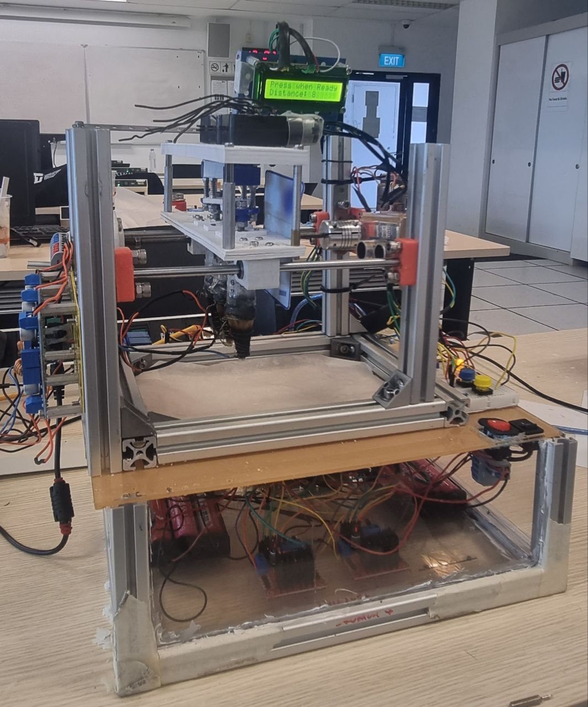

Food Printing System - Sustainable Food Labelling
RSE3106 Systems Engineering Project 2
Overview
This project focuses on sustainable food packaging, specifically utilizing 2D food printers to create edible food labels. The system aims to address the environmental impact of traditional plastic food labels by offering a edible alternative. It includes an inkjet-based 2D food printer (Evebot) that uses food-grade ink to print labels, and a machine that applies a wax coating to the food, ensuring the labels stay intact.
Contributions
Assisted in identifying problems in the food industry and proposing alternative solutions for food labelling.
Conducted research and testing on different types of edible coatings.
Designed and make the physical prototype.
Prototype Images and Videos


RESULTS
The prototype successfully demonstrated the concept of creating an edible coating to protect and prevent smudging of the print.
The coating were inconsitent and could only partially cover the print
Future Works
Look into more types of the modified tips, to allow uniform coverage.
Use a different material to prevent leakage at the tip of the syringe